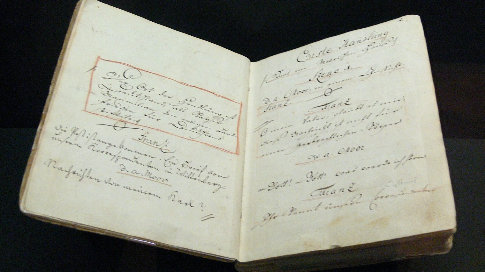

O que faz o ponto no teatro? Entenda o ofício que sopra as falas dos atores

Durante séculos, o teatro guardou um alçapão no centro da boca de cena, coberto por uma concha de madeira voltada para o palco. Lá dentro ficava o ponto, encarregado de acompanhar o texto linha a linha e soprar ao ator, em voz baixa, a fala seguinte. A profissão praticamente desapareceu dos palcos europeus e brasileiros, mas não morreu: em janeiro de 2026, o Teatro Nacional D. Maria II, em Lisboa, abriu uma oficina gratuita para formar e escolher um ponto novo.
O curso A Voz Invisível: O Regresso do Ponto de Teatro teve 16 horas em quatro sessões entre 29 de janeiro e 1º de fevereiro, na Tobis Portuguesa, e aceitou no máximo dez inscritos. Segundo a página da oficina, o objetivo era escolher um profissional para uma produção da casa na temporada de 2026, e os inscritos precisavam informar disponibilidade para contratação com o teatro entre 13 de julho e 31 de outubro de 2026. Conduziu a oficina Cristina Vidal, a última ponto em atividade no D. Maria II.
O que exatamente faz o ponto no teatro?
A definição está no verbete que a Biblioteca Central da PUCRS mantém sobre o ofício: o ponto era quem assoprava, em voz baixa, as falas que os atores repetiriam em voz alta. Ele trabalhava num alçapão no centro e à frente do palco, escondido por uma proteção curva que jogava a voz para o fundo da cena, e não para a plateia.
A vantagem era dupla: os atores não precisavam decorar o texto inteiro e, mesmo quando decoravam, tinham socorro imediato se a memória falhasse. O trabalho começava antes da estreia. O Teatro Nacional D. Maria II lista as funções tradicionais do cargo: auxílio na memorização durante os ensaios, o sussurro que garante a continuidade da cena, a manutenção do ritmo dramático e o apoio ao encenador, com anotação e acompanhamento rigoroso do texto em trabalho.
Quando a caixa não existe, o ponto trabalha na frisa de boca, encostado na lateral do palco, com o texto sobre uma mesinha e uma luminária baixa. Vale para ele o que vale para o contrarregra e para quase todo ofício de coxia: quem faz bem não é notado.
De onde vem o nome da profissão
Em francês, o ponto se chama souffleur, de souffler, soprar. A palavra atravessou para outras línguas e chegou ao russo como sufliôr, como registrou o Russia Beyond em sua edição brasileira. O nome guarda a imagem do sopro: uma voz que a plateia não ouve e sem a qual a cena para.
O ofício deixou objetos. O Reiss-Engelhorn-Museen, em Mannheim, na Alemanha, conserva o caderno de ponto usado na estreia mundial de Die Räuber, de Friedrich Schiller, em 13 de janeiro de 1782. O volume foi feito à mão pelo ponto Johann Daniel Trinkle entre 1781 e 1782.
Por que a profissão quase acabou
Em novembro de 2017, o jornal português Observador publicou uma entrevista com Cristina Vidal, no D. Maria II desde 1990. Ela contou que assistiu ao primeiro espetáculo da vida aos cinco anos, escondida na caixa do ponto para escapar dos censores que multavam teatros por deixar crianças na plateia. Àquela altura, restavam dois pontos em Portugal: ela e o colega João Coelho.
"Sim, a profissão vai morrer comigo e com o João. Claro que vai. E isso entristece-me bastante", disse Cristina Vidal ao Observador.
Na mesma entrevista, ela explicou por que raramente vai ao teatro como espectadora.
"Fico muito ansiosa, muito ansiosa. Como não conheço o texto, não sei onde é que vai haver lugar a pausas", contou.
Cristina Vidal subiu a um palco pela primeira vez em 2017, quando o encenador Tiago Rodrigues fez dela personagem e intérprete de Sopro. A produção do D. Maria II estreou no Festival de Avignon em julho daquele ano, no Cloître des Carmes. Boa parte do que se conta em cena são histórias que ela confidenciou a ele, de pontos e da gente que faz teatro.
Onde o ponto ainda trabalha
Em reportagem de 2019, o Russia Beyond entrevistou Larissa Andrêieva, então com 70 anos, ponto do Teatro Máli, em Moscou. A casa era um dos dois teatros dramáticos da cidade que ainda usavam pontos, e mantinha cinco profissionais na função. Ela abandonou o poço por causa de alergia à poeira e passou a trabalhar na lateral do palco, com o texto e uma xícara de chá.
"Minha profissão não está só morrendo: ela já morreu", disse Andrêieva ao Russia Beyond.
Na ópera, segundo a mesma reportagem, o quadro é outro: em casas como o Bolshoi, a função continua requisitada.
E no Brasil, alguém ainda usa ponto?
O ponto quase sumiu das fichas técnicas brasileiras, mas a função migrou para o ouvido. Em junho de 2025, de volta aos palcos paulistanos com Traidor, Marco Nanini falou do ponto eletrônico que adotou com a idade, em entrevista ao programa Polipolar Show, apresentado por Michel Melamed e reproduzida pelo Diário do Grande ABC.
"Não está nada na ponta da língua. Na verdade, eu não tenho isso, mas sim, o ponto eletrônico", disse o ator, então com 77 anos.
Ele acabou formando o próprio ponto: "Depois dos 60 anos, comecei a usar ponto eletrônico nas peças. Eu treinei e dei aula de ponto para ele. Agora é ator, fez escola de teatro e continua sendo meu ponto".
A concha de madeira saiu do chão do palco, o caderno virou uma folha na coxia ou um microfone, e o nome ficou. Como a luz fantasma e o costume de dizer merda antes da estreia, o ponto pertence à camada de hábitos que o teatro carrega há séculos sem precisar justificar.
Perguntas rápidas
O que faz um ponto no teatro?
Acompanha o texto nos ensaios e nas apresentações e sopra a fala seguinte quando o ator hesita. Também ajuda na memorização e anota marcações para o diretor.
Onde fica o ponto durante o espetáculo?
Tradicionalmente num alçapão no centro e à frente do palco, coberto por uma concha que joga o som para o fundo da cena. Onde não há caixa, ele trabalha na frisa de boca, na lateral.
Por que o ponto é chamado de souffleur?
Souffleur vem do francês souffler, soprar. A palavra passou a outras línguas, como o russo sufliôr.
A profissão de ponto acabou?
Quase. Em Portugal, restavam dois pontos em 2017, segundo o Observador, e o Teatro Nacional D. Maria II abriu em 2026 uma oficina para formar e escolher um novo profissional. No Brasil, a função sobrevive sobretudo na forma de ponto eletrônico.